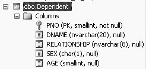

|
|
|
2.1. Displaying Data with the SELECT StatementOne of the very first things that you would usually want to do with a set of tables (or a database) is to see what information the tables contain. To display the information in a table using a query, you use a SELECT command on the table. SELECT is usually the first word in a SQL statement or query. The SELECT statement returns information from a table (or a set of tables, the database) as a set of records, or a result set. The result set is a tabular arrangement of data, composed of rows and columns. The SELECT statement shows the output on the computer screen (as shown in Figures 1-26 and 1-28 of Chapter 1). It does not save the results. The simplest and most commonly used form of the SELECT syntax is: SELECT fields (a.k.a. columns or attributes) FROM Table Here, Table is the name of the table from which the data will be displayed, and fields are the columns (attributes) that you chose to display from the named table. If you did not know the name of the columns in the table, or you wanted to display all the columns in the table, you would use an asterisk (*) in place of fields; substituting an asterisk (*) in place of fields would list all the columns in the table. So, the SELECT statement gives us a result set that is composed of the data from columns of a table.
But, before we use the SELECT statement, we have to make sure that the right database is open. To open a database that you want to use, type the following in the query editor screen (the query editor screen is shown in Figure 1-12 of Chapter 1): USE Student_course and then click the Execute button. Student_course is the name of the database that we would like to open. The Student_course database should now be active. Once the Student_course database is active, to display all the data from a table called Dependent from our database (Student_course database), type the following in the query editor screen: SELECT * FROM Dependent The * means all columns of the Dependent table. Now click the Execute button to execute this query. Your results will display in the result pane. 2.1.1. SELECT without the FROMMost SQL languages require a FROM in a query. But, SELECT statements in SQL Server do not need to be from a table. SQL Server allows us to write some special queries without FROM. For example, using a special function, GEtdATE, we may type this: SELECT GETDATE( ) and the query will return the date and time as defined by the host computer: ----------------------- 2006-01-12 21:55:30.107 (1 row(s) affected) Note that these columns do not have any headings. In SQL Server , a SELECT statement can also be used to make an assignment. For example, the following example assigns 100 to col1, and 200 to col2: SELECT col1=100, col2=200 with the results: col1 col2 ----------- ----------- 100 200 (1 row(s) affected)
SELECT 'A', 'B' produces: ---- ---- A B (1 row(s) affected) Note that this output has no headings either. SELECT 4+3, 4-3, 4*3, 4/3 produces: ----------- ----------- ----------- ----------- 7 1 12 1 (1 row(s) affected) To include meaningful column headings here, we can type: SELECT Additions=4+3, Subtractions=4-3, Multiplications=4*3, Divisions=4/3 which results in: Additions Subtractions Multiplications Divisions ----------- ------------ --------------- ----------- 7 1 12 1 (1 row(s) affected)
2.1.2. Displaying or Selecting Columns from a TableUsing a SELECT statement, you do not have to display or return all the columns from a table. You may choose to display only certain relevant columns from a table, provided you know the names of the columns in the table. In this section, we show you how to display or return one column from a table, more than one column from a table, and then how to display or return all columns from a table. Then we introduce the ORDER BY clause and also show you how to order the output in ascending or descending order by adding the ASC or DESC commands, respectively, to the ORDER BY clause. 2.1.3. Displaying or SELECTing One Column from a TableTo be able to display or return particular fields or columns from a table, you need to know the column names in the table. To view the column names that a table contains, you will have to go to the Table Definition of a table. Chapter 1 (Figure 1-20) shows you how to view the table definitions of tables. You may find it odd that a someone working with a database might not know the column names. However, when creating a table, one has great latitude with naming columns. If you knew, for example, that a table called Customer contained a name and address, you'd have to know the exact name of the column. If the table creator called the customer's name CustName, then to retrieve the data from that column, you'd have to use CustName and not any variation of it (like CustomerName or Name or anything else). Select the table for which you want to see the definition by right clickingon the table from the Object Explorer, and then clicking on Columns. Now, right-click on the Dependent table and click Columns, and you will see the table definition of the Dependent table. Figure 2-1 shows the definition of the Dependent table. The table definition provides the exact column names, the data types of the columns, the field sizes and information on whether the fields can hold nulls. The data type allows you to enter only a particular kind of data in the columns. The field sizes allow you to enter only up to a certain number of characters in a field. null or not null tells you whether the field will allow for nulls. The Dependent table in Figure 2-1 has columns PNO (short for parent_number) of data type SMALLINT (small integers), DNAME (short for dependent name) of data type NVARCHAR (a varying number of characters), RELATIONSHIP (for relationship to parent or Student) of data type NVARCHAR, SEX of data type CHAR (one character), and AGE of data type SMALLINT. The only field in the Dependent table that cannot be null is STNO.
Figure 2-1. Definition of the Dependent table
Once you know what columns a table contains, you may choose to view or display particular columns of the table. Following is the general syntax to display or SELECT the data from one field or column of a table: SELECT field_name FROM table
For example, to display or SELECT data for a column called dname from the Dependent table, you type the following query in the query editor: SELECT dname FROM Dependent This query returns a result set containing 39 records or rows (of which the first 10 rows are shown): dname -------------------- Matt Mary Beena Amit Shantu Raju Rani Susan Sam Donald II . . . (39 row(s) affected) 2.1.4. Displaying or SELECTing More than One Column from a TableTo display or SELECT (or return) data for more than one column of the table, the column names have to be separated by commas. For example, to display the data from the dname and relationship columns in the Dependent table, type the following query: SELECT dname, relationship FROM Dependent This query also produces 39 rows of output (we show the first 12 rows here): dname relationship -------------------- ------------ Matt Son Mary Daughter Beena Spouse Amit Son Shantu Daughter Raju Son Rani Susan Daughter Sam Son Donald II Son Chris Son Susan Daughter . . . (39 row(s) affected) In this example, we see a row where dname (dependent name) is Rani, but no relationship has been assigned or entered. This is a very typical problem in any databasedata is missing or unknown, also known as NULL. Therefore, preferably, when data is entered into a table, all columns should be valued. In this case probably an empty string was entered, otherwise SQL Server assigns a NULL value.
2.1.5. Displaying or SELECTing All Columns of a TableThere are times when you will want to display or select all the columns of a table. To do so, as illustrated previously, you use a * in place of the column names. For example, the following produces an output of 39 rows and all the columns in the Dependent table: SELECT * FROM Dependent This query also produces 39 rows of output (of which we show the first 15 rows here): PNO DNAME RELATIONSHIP SEX AGE ------ -------------------- ------------ ---- ------ 2 Matt Son M 8 2 Mary Daughter F 9 2 Beena Spouse F 31 10 Amit Son M 3 10 Shantu Daughter F 5 14 Raju Son M 1 14 Rani F 3 17 Susan Daughter F 4 17 Sam Son M 1 20 Donald II Son M NULL 20 Chris Son M 6 34 Susan Daughter F 5 34 Monica Daughter F 1 62 Tom Husband M 45 62 James Son M 14 . . . (39 row(s) affected) 2.1.6. ORDER BYA table maintains the data in the order that the system stores it in, which is unpredictable. Remember that a relational database contains sets of rows of data and sets are not ordered. If you wish to display the contents of a table in a predictable manner, you may use the ORDER BY clause in the SELECT statement. For example, to order the Dependent table by field age, you would type the following: SELECT dname, age FROM Dependent ORDER BY age This produces the following 39 rows of output, ordered by age (of which the first 20 rows are shown below): dname age -------------------- ------ Donald II NULL Mita NULL Losmith NULL Prakash 1 Mithu 1 Raju 1 Sam 1 Monica 1 Jon 2 Rakhi 2 Jake 2 Nita 2 Mahesh 2 Rani 3 Amit 3 Susan 4 Sebastian 4 Mamta 4 Madhu 5 Shantu 5 . . . (39 row(s) affected) The ORDER BY does not actually change the order of the data in the table. It only displays or returns the data (output) in a particular order. When using an ORDER BY in a SELECT statement, you do not have to have the column that you are ordering by in the SELECT statement. For example, you may display only the dependent name and age while ordering by sex, as follows: SELECT dname, age FROM Dependent ORDER BY sex This would produce 39 rows of output, of which we are showing the first 5 rows (the females are shown first, because it is ordered alphabetically): dname age -------------------- ------ Mary 9 Beena 31 Shantu 5 Rani 3 Susan 4 . . . (39 row(s) affected) Although the previous output is not wrong, it is may appear to be randomly ordered by someone who does not know what was used in the ORDER BY statement. Therefore, it is generally better to display the column that you are ordering by also, as follows: SELECT dname, age, sex FROM Dependent ORDER BY sex This query would once again produce 39 rows, of which we are showing the first 5 rows: dname age sex -------------------- ------ ---- Mary 9 F Beena 31 F Shantu 5 F Rani 3 F Susan 4 F . . . (39 row(s) affected) 2.1.6.1. ORDER BY and NULLsWhen data has not been entered for a particular column of a particular row, this cell gets a NULL value. Null means that data is missing or unavailable, so the cell has no value. If the field that you choose to ORDER BY contains nulls, the fields that have null values assigned to them are placed at the top of the displayed list of output. This is because of the way SQL Server stores null values internally. Look at the output of the following query: SELECT dname, age FROM Dependent ORDER BY age which produces 39 rows of output, of which we are showing the first 16 rows: dname age -------------------- ------ Donald II NULL Mita NULL Losmith NULL Prakash 1 Mithu 1 Raju 1 Sam 1 Monica 1 Jon 2 Rakhi 2 Jake 2 Nita 2 Mahesh 2 Rani 3 Amit 3 Susan 4 . . . (39 row(s) affected) If nothing was entered in a column (an empty string was entered), the column behaves just like a NULL field when using the ORDER BY clause. For example, if we type in the following query: SELECT dname, relationship FROM Dependent ORDER BY relationship we get 39 rows of output, of which we are showing the first 8 rows: dname relationship -------------------- ------------ Rani Susan Daughter Mary Daughter Susan Daughter Monica Daughter Hillary Daughter Phoebe Daughter Shantu Daughter . . . (39 row(s) affected) In this table, nothing (an empty string) was entered in the relationship column for the dependent Rani. 2.1.7. Ascending and Descending OrderIn SQL Server, the default order of an ORDER BY is ascending. To display or order output in descending order, the keyword DESC has to be appended to the ORDER BY clause. And, in order to display or order output in ascending order, the keyword ASC can be appended to the ORDER BY clause. So, unless you specify otherwise, the following two queries will give you the same output: SELECT dname, age FROM Dependent ORDER BY age and: SELECT dname, age FROM Dependent ORDER BY age ASC The top query returns a result set ordered in ascending order by age by default. The second query has the keyword ASC appended to the ORDER BY clause, so it also orders in ascending order by age (the output for these queries has been shown previously). In order to display or order output in descending order, the keyword DESC can be appended to the ORDER BY clause, as follows: SELECT dname, age FROM Dependent ORDER BY age DESC This produces 39 rows of output in descending order of age (of which the first 10 rows are shown here): dname age -------------------- ------ Tom 45 Beena 31 Barbara 26 Barbara 23 Susan 22 Susie 22 Xi du 22 Sally 22 Hillary 16 James 14 . . . (39 row(s) affected) 2.1.8. Ordering Within an OrderThere will be times when you will want to sort groups within an order by another order. SQL Server syntax allows you to do this. For example, using the Dependent table, if you want to order all the dependents by sex, and within sex you want to order by age in descending order, would you type the following query: SELECT dname, sex, age FROM Dependent ORDER BY sex, age DESC This query would produce the following 39 rows of output: dname sex age -------------------- ---- ------ Beena F 31 Barbara F 26 Barbara F 23 Susan F 22 Susie F 22 Xi du F 22 Sally F 22 Hillary F 16 Phoebe F 12 Mary F 9 Mona F 7 Rekha F 6 Madhu F 5 Shantu F 5 Susan F 5 Susan F 4 Mamta F 4 Rani F 3 Rakhi F 2 Nita F 2 Monica F 1 Mita F NULL Tom M 45 James M 14 Matt M 8 Chris M 6 Om M 6 James M 5 Sebastian M 4 Amit M 3 Jon M 2 Jake M 2 Mahesh M 2 Prakash M 1 Mithu M 1 Sam M 1 Raju M 1 Donald II M NULL Losmith M NULL (39 row(s) affected) You could also order by descending order of sex, and descending order of age, as follows: SELECT dname, sex, age FROM Dependent ORDER BY sex DESC, age DESC This query would give the following 39 rows of output: dname sex age -------------------- ---- ------ Tom M 45 James M 14 Matt M 8 Chris M 6 Om M 6 James M 5 Sebastian M 4 Amit M 3 Jake M 2 Jon M 2 Mahesh M 2 Prakash M 1 Mithu M 1 Raju M 1 Sam M 1 Donald II M NULL Losmith M NULL Beena F 31 Barbara F 26 Barbara F 23 Sally F 22 Susan F 22 Susie F 22 Xi du F 22 Hillary F 16 Phoebe F 12 Mary F 9 Mona F 7 Rekha F 6 Madhu F 5 Shantu F 5 Susan F 5 Susan F 4 Mamta F 4 Rani F 3 Nita F 2 Rakhi F 2 Monica F 1 Mita F NULL (39 row(s) affected) |
|
|
|